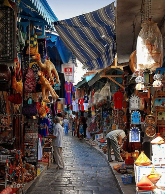
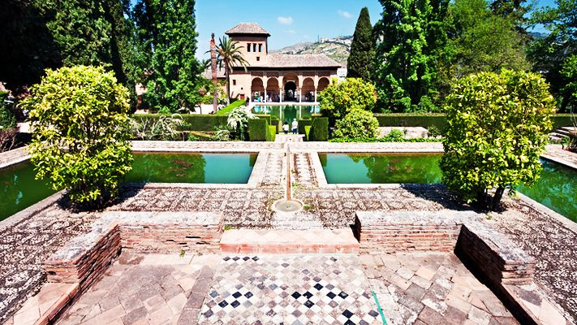
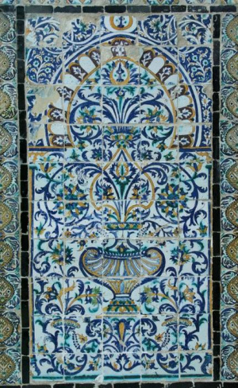
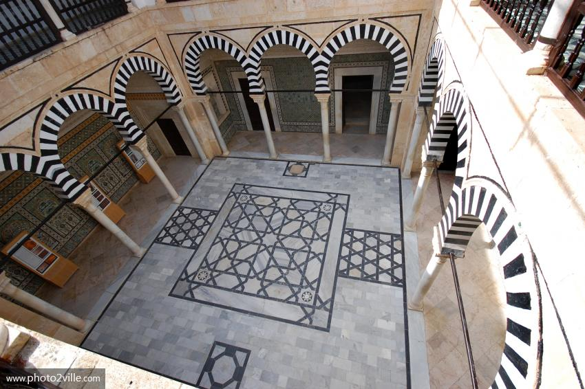
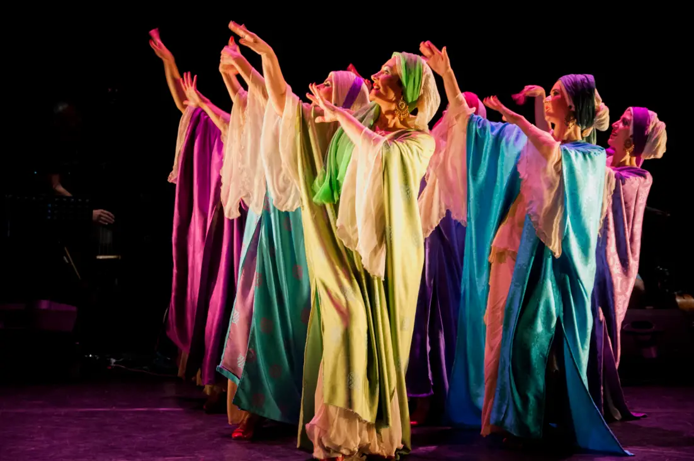

Les Fêtes Et Les Traditions Abdalouses En
Tunisie!
Ils pensaient pouvoir s’installer dans une nouvelle terre d’accueil. La réalité fut
tout autre puisque dès leur arrivée ils s’étaient retrouvés dans un monde différent, primaire et inconnu. Comment
ce peuple en désarroi a-t-il pu survivre loin de sa terre d’origine? Les témoignages de l’époque diffèrent,
quelques uns pensent qu’il y a eu intégration et même assimilation de cette mi- norité, d’autres pensent que
certains vécurent une seconde tragédie puisque la population autochtone les avait complètement rejeté les traitant
de mécréants et d’espagnols

Est-il permis de préserver l'héritage andalou à une époque où l'arbre de nombreux Tunisiens est mélangé à la
péninsule andalouse? Il est bien connu que les Andalous ont apporté à la Tunisie, à l’époque des Hafsides, de
nombreuses traditions et arts. Et que le premier groupe expulsé d'Andalousie par les Espagnols se soit établi à
Sidi Bou Saïd et sous la protection de la ville au milieu du XIIIe siècle. C'est pourquoi ce village touristique
tunisien, qui jouit aujourd'hui d'une renommée internationale, porte toujours le niveau d'éléments architecturaux
et, pour les activités artisanales, les effets des influences mauriciennes.

Art andalou:
Nous devons d’abord préciser que l’art andalou ou maure n’est pas un produit spécial de ce que nous avons
coutume d’appeler l’art arabe andalou. C'est le produit d'un hybride hérité des arts grecs et imprégné de la
merveilleuse créativité des musulmans qui se sont installés en Ibérie. Contrairement à ce que nous pensons, cette
innovation a été rendue possible par l’interdiction religieuse de l’interdiction de la représentation visuelle, et
par le caractère arabe du calcul et de la géométrie.

La Céramique Andalouse:
La céramique tunisienne, qui a considérablement augmenté ces dernières années à la demande des Tunisiens désirant
embellir leur maison, est un art connu de longue date dans notre pays. Bien que l'industrie de la porcelaine dans
les royaumes asiatiques ait évolué il y a des milliers d'années, l'art de la céramique a pénétré dans le monde
arabe à travers le califat omeyyade, qui a hérité des techniques connues à l'est, puis s'est étendu en Andalousie
des XIIe au XIVe siècles, affectant finalement l'art et la céramique en Tunisie.

Aux yeux des historiens, l'industrie de la porcelaine, qui reflète une couleur colorée dans les pots, les
assiettes et les bassins, a évolué dans les villes de Malaga, Valence, Séville et Grenade, qui, grâce à la
migration andalouse, a donné à cette décoration colorée et aux thèmes végétaux ou techniques particulièrement
prédominants sur la mosaïque murale. Décoration grecque ou européenne. Dans cette mosaïque, nous trouvons le désir
de remplir les espaces, ce qui, selon certains commentateurs, explique l'abondance de guselles et de fleurs
ouvertes aux formes décoratives qui mènent le spectateur au fond de l'infinie arabesque. Il est à noter que les
formes géométriques imposées aux sujets se retrouvent parfois aussi dans l'art de la calligraphie qui deviendra au
fil des ans en Tunisie et dans le reste des pays arabes un art en soi
À cet égard, nous ne pouvons pas nier complètement la contribution du Morsi à la calligraphie arabe et à
l’architecture en général, caractéristique de l’art islamique.

Assistez à la musique andalouse:
La musique tunisienne a également été influencée par la musique andalouse, en particulier par de véritables écoles
de voix. Depuis le XIIe siècle, c'est un genre musical associé à la poésie, à ses lois officielles et à son
répertoire. Il appartient maintenant au groupe de musique traditionnelle tunisienne. Un lieu composé de plusieurs
couches, telles que la rouille, l’épine et l’auja. Il a des caractéristiques qui doivent être respectées par
chaque musicien, telles que le besoin d’affecter l’artiste et de toucher le sentiment de l’auditeur.
Nous savons bien que la contribution de Mursi en Tunisie constitue véritablement un point de contact avec les
influences du Moyen-Orient, caractérisées par des influences locales riches en traditions juive, chrétienne,
islamique et même romaine. D'ici la présence rayonnante des Espagnols dans les noms de certains pots et de
certains matériaux. La Tunisie a donc cette particularité qui la fait embrasser, à travers des alliances, des
œuvres de civilisation qui lui donnent finalement un caractère distinctement autoritaire.